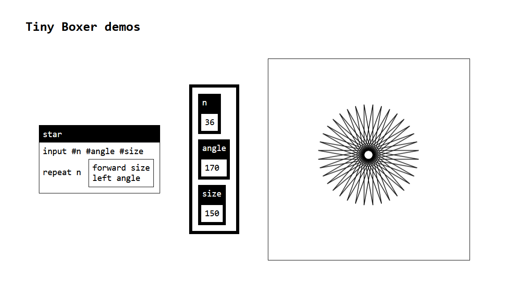
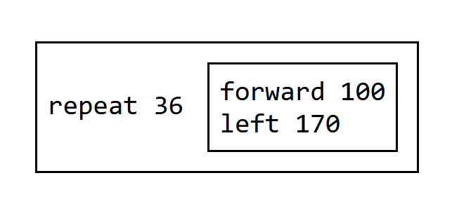

Programming systems
deserve a theory too!
Tomas Petricek, Charles University, Prague


The name of this summer school
is so 1990s!

The name of this summer school
is so 1990s!
The browser makes this easy to fix.
Silly joke?
1990s not arbitrary!
- Systems to languages paradigm shift
- The Structure of a Programming Language Revolution (Gabriel, 2012)
Browser not arbitrary!
- Good programming system to learn from
- Empowering users & malleability (almost)
Programming systems
Scientific paradigm shift

Programming Languages
Programming is
writing code
Formal semantics, implementation, paradigms, types
We know how
to study this!

Programming Systems
Interacting with a stateful system
Feedback, liveness, interactive user interfaces
But how do we
study this?
Paradigm shift in the 1990s

Scientific paradigm shifts
- Described by Thomas Kuhn in 1962
- Paradigms are incommensurable
- Old concepts stop making any sense
From systems to languages
- Described by Richard Gabriel in 2012
- From CLOS and Flavors to mixins
- From running system to code
- From state & interaction to semantics
Demo
Not what you'd expect at PLISS

History of programming
What we see depends
on how we look!
Poorly language? Interesting system?
Technical dimensions
Qualitative systems analysis
Technical dimensions

What is a dimension
- Captures a property of a system
- Covers old and new systems
- Defines a range of values
Using the framework
- Identify gaps in design space
- Characterise new and old systems
- Qualitative comparison of systems

Technical dimensions catalogue
Analysis of:
LISP machines, UNIX, Web, Hypercard, Spreadsheets, Haskell, Boxer, Dark, etc.
Good old programming systems
Technical dimensions analysis
Commodore 64 BASIC

Modes of interaction
Terminal works as both REPL
and structure code editor
Factoring of complexity
Simple but experts can use POKE and SYS
Learnability
Simple unstructured language
Demos distributed as source in magazines

Boxer: A reconstructible computational medium
Explicit structure
Code represented as boxes
User interface is boxes
Abstraction construction Start concrete & generalize
Naive realism (extra)
What you see is what there is
Demo
Boxer Sunrise by Steven Githens

Pygmalion: a creative programming environment
Feedback loops
See result of interacting
with icons immediately
Abstraction construction
Directly manipulate concrete values to define computation
Demo
Pygmalion-like by Adrian Habusta
Methodology
Programming systems research
Learning from past systems

What's cool about C64 BASIC?
- Oriented around code interactions
- Simple with options for experts (POKE)
- Poor engineering in a poor language!
Complementary science
- Advocated by Hasok Chang
- Do (serious) history to recover ideas
- Lost due paradigm shifts in science
- Even more powerful for computing!
Making scientific claims
Programming language theory
Formal proofs, about tiny models
Empirical evaluation
Performance, in controlled environment
User studies and case studies
Usability or flexibility, in specific scenarios

Tiny systems
Experience of using and building a system, on a tiny scale
Conceptual structure?
Potential of the design?
Technical dimensions?
Denicek
Exploring the design space
User experiences
Difficult to implement in existing systems!
- Local-first collaborative editing
- Programming by demonstration
- Incremental recomputation
- Schema change control
Denicek design ideas

Document representation
- Data are just document nodes
- Formulas are just document nodes
Edit operations
- Editing data - modify the document
- Adding formulas - modify the document!
- User interaction - edits behind the scene
- Code evaluation - edits behind the scene!
Demo
Implementing counter using Denicek

Merging edits
Collaborative editing
Two users edit document
Try to reconcile edits!
Operational transform
Given concurrent \(e_1\) and \(e_2\), compute \(e_2'\) respecting \(e_1\),
producing sequence \(e_1, e_2'\).
Demo
Collaborative document editing
Unreasonable effectiveness of merging
-
Local-first collaborative editing
Merging edits from concurrent users -
Programming by demonstration
Replay recorded edits using merging -
Incremental recomputation
Invalidate conflicting evaluated edits -
Schema change control
Keeping formulas in sync with schema
Denicek computational substrate
Computational substrate
- Documents + edits
- Good basis for interesting programming systems
Evaluation
- A range of technical dimension values
- Case study notebook system
Case study: Data science notebook

Tiny Boxer
Fun project for PLISS
Demo
Turtle graphics in Tiny Boxer
Explicit structure + naive realism
<div class="box">
<span>
<i>repeat</i> <b>36</b>
<div class="box">
<span><i>forward</i> <b>100</b></span>
<span><i>left</i> <b>170</b></span>
</div>
</span>
</div>
Boxes <div> contain series of commands <span>
Commands start with an identifier <i> followed by
idents <i>, numbers <b>, strings <s> and nested boxes
Evaluation
Copy and replace
Mutate the document!
All state is visible

Evaluation
Copy and replace
Mutate the document!
All state is visible
type Commands = Command[]
type Command =
{ operation: string,
element: Element,
parameters: Parameter[] }
type Parameter =
| { kind: "identifier",
name: string,
element: Element }
| { kind: "symbol",
name:string,
element: Element }
| { kind: "primitive",
value: string,
element: Element }
| { kind: "box",
element: Element }
Implementation structure
Parse parameter
(Element) -> Parameter
Parse box
(Element) -> Commands
Evaluate command
(Command) -> void
Evaluate step
() -> void
Variables as named boxes

Named boxes
<div class="name">
<span>who1</span>
<div class="box">
<span><s>PLISS</s></span>
</div>
</div>
Variable lookup
- Look in the current box (scope)
- Look in the document root
Tiny Boxer step-by-step
- Step 1 - Parsing DOM into commands and parameters
- Step 2 - Evaluation of simple built-in commands
- Step 3 - Turtle graphics and repeat command for looping
- Step 4 - Box lookup and built-ins that introduce boxes
- Step 5 - Calling other boxes and input command
Conclusions
Programming systems

Programming research in Prague
Interactive systems, types and languages, tools for data science
Looking for post-docs and PhD students!
Programming systems deserve a theory too!
-
Scientific paradigm shift - We know a lot
about languages, but little about systems! -
Technical dimensions - Interaction, notation
adaptability, conceptual structure & more... -
Research methods - Take history seriously
and have fun writing tiny systems!
Tomas Petricek, Charles University, Prague
References